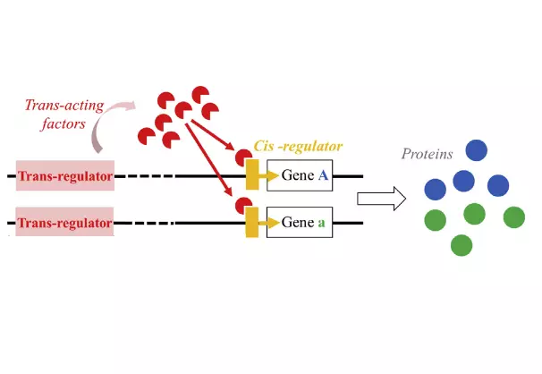
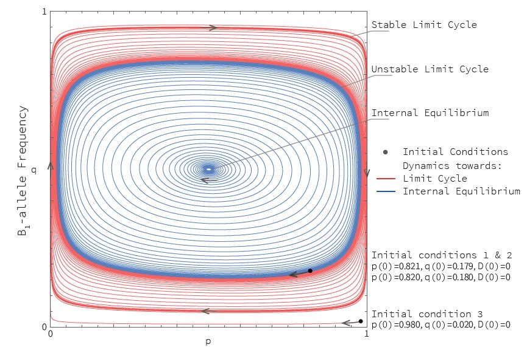
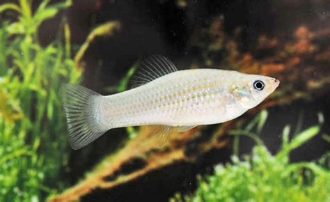
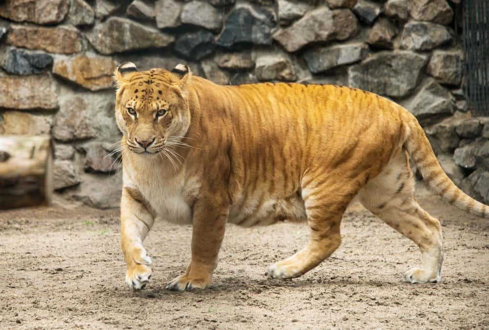

Hello !
Welcome to my professional website, where I will tell you a bit about me and my research.
Presently a Postdoctoral researcher at Royal Holloway, University of London
under the supervison of Prof. Francisco Úbeda , I am a population genetics theoretician. I have been interested in all
sorts of genetic oddities, with transversal themes including sexual reproduction, sex chromosomes, recombination and selfish
genetic processes. You will find more details in the Research section. In a few words, I have mostly
used mathematical analysis and computer simulations to formulate various novel theories.
Graduated in Life Sciences from the prestigious Ecole Normale Supérieure (ENS) de Paris I
obtained in 2012 a Master's Degree in Ecology, Biodiversity and Evolution from both ENS and Université Pierre-et-Marie-Curie (formerly Paris-VI).
After a first year of post-graduate research, I moved to Montpellier, where I started in 2013 a PhD with
Dr. Thomas Lenormand at the
Centre d'Ecologie Fonctionelle et Evolutive, completed in 2016. I then took a break
from academics: I volunteered in a shelter against homelessness and for social inclusion in Montpellier, before proceeding to a
2-year travel through various American countries: Canada, Mexico, Ecuador, Colombia, Cuba. During this life-changing experience, I
volunteered in various sustainable development projects around themes such as sustainable agriculture, self-sufficiency, self-determination
of indigenous people, humanitarian relief. I eventually came back to Europe, and started a Postdoc with Prof. Francisco Úbeda in collaboration
with Prof. Ingo Schlupp from the University of Oklahoma. If you'd like to know more, here is my detailed CV.
You can also find information about me and my research on my professional social media:


My Research
My work focuses on understanding the role of natural selection in directing the evolution of a diversity of processes, especially those associated with reproduction.
This includes:
How natural selection shapes features of sexual reproduction?

Enhancer Runaway and the Evolution of Diploid Gene Expression: Evolution of Sex Chromosomes via Selfish Regulatory Evolution

Recombination Hotspots Evolution in Vertebrates
How alternative modes of reproduction evolve by natural selection, and their genetic consequences.

Evolution of Asexuality in Hybrid Species

Introgression patterns in Hybrid Zones between Species with Different Mating Systems
Publications
-
Why Do Hybrids Turn Down Sex?
Frederic Fyon, Waldir Berbel-Filho, Ingo Schlupp, Geoff Wild, Francisco Úbeda (2022) Evolution qpad129
DOI: 10.1101/2023.02.24.529842 -
Influence of the mutation load on the genomic composition of hybrids between outcrossing and self‐fertilizing species
Frederic Fyon, Waldir Berbel-Filho (2022) Ecology and Evolution 13(9): e10538
DOI: 10.1101/2022.12.12.520111 -
The Recombination Hotspot Paradox: Co-evolution between PRDM9 and its target sites
Francisco Úbeda, Frederic Fyon, Reinhard Bürger (2023) Theoretical Population Biology 153: 69-90
DOI: 10.1016/j.tpb.2023.07.001 -
Sex Chromosome Degeneration by Regulatory Evolution
Thomas Lenormand, Frederic Fyon, Eric Sun, Denis Roze (2020) Current Biology 30, 1–6
DOI: 10.1016/j.cub.2020.05.052 -
Cis-regulator runaway and divergence in asexuals
Frederic Fyon and Thomas Lenormand (2017) Evolution 72-3: 426–439
DOI:10.1111/evo.13424 -
Enhancer Runaway and the Evolution of Diploid Gene Expression
Frédéric Fyon, Aurélie Cailleau, Thomas Lenormand (2015) PLoS Genet 11(11): e100566
DOI: 10.1371/journal.pgen.100566